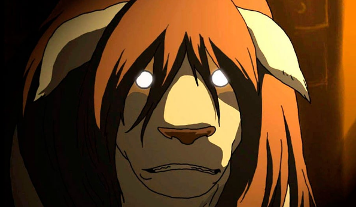

Animes
Fullmetal Alchemist Brotherhood: A Perfeição da Equivalência

Oi pessoal, tudo bem? Dando sequência à nossa maratona de favoritos, hoje vamos falar de um titã incontestável. Se você procura uma obra com começo, meio e fim perfeitamente amarrados, o escolhido da vez é Fullmetal Alchemist: Brotherhood.
Sinopse: Os irmãos Edward e Alphonse Elric quebram o maior tabu da alquimia ao tentar ressuscitar sua falecida mãe através da transmutação humana. O experimento falha tragicamente: Edward perde uma perna e sacrifica um braço para selar a alma de Alphonse, que perdeu todo o corpo, em uma armadura de metal. Agora, como Alquimistas do Estado, eles cruzam um país à beira da guerra em busca da mítica Pedra Filosofal para restaurar o que perderam, sem imaginar as conspirações sombrias que envolvem a criação do artefato.
Falar de Fullmetal Alchemist é falar sobre uma obra-prima estrutural. O que mais me fascina nessa história é como o sistema de poder, a Alquimia, é tratado com rigor quase científico. A famosa Lei da Troca Equivalente não é apenas um artifício de roteiro, mas uma filosofia de vida que molda o amadurecimento dos irmãos.
A jornada dos Elric aborda dilemas morais profundos, as cicatrizes deixadas por conflitos militares e o peso do pecado e do arrependimento. Poucos animes conseguem equilibrar tão bem momentos de humor leve com tramas políticas pesadas, dogmas religiosos e mistérios assustadores sobre a própria natureza humana.
Se você quer uma narrativa madura, sem pontas soltas, com vilões espetaculares (os Homúnculos) e um dos melhores finais da história das animações, Brotherhood é indispensável.
Ficha Técnica
- Título original: Fullmetal Alchemist: Brotherhood
- Ano de lançamento: 2009
- Direção: Yasuhiro Irie
- Estúdio: Bones